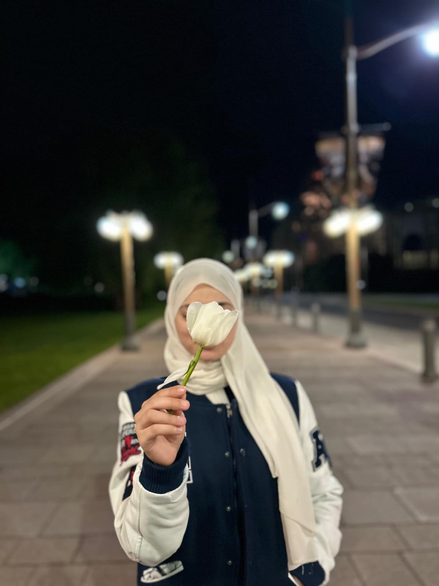

About Me
Hi, I’m Faiza. I’m 22 years old and I come from Algeria. I’m the oldest in my family. Growing up as the oldest made me more responsible,Before moving to Canada, I was studying in Algeria. Then I decided to take a new step in my life and come here to study IMD at Algonquin College.
It is my 1st year in Canada, my first time traveling alone and living far from my family. To be honest, the beginning was really hard. I missed my family a lot. Sometimes I felt stressed for no clear reason, just because everything around me was different. The weather was also a big surprise. The snow, the cold, the long winter days… it was something completely new for me. In the meantime i like swimming , enjoy life ,also reading a sorties.
My Hobbies
- swiming
- reading book
- video game
My Photo
